| Learning Orbital Dynamics with Denoising Hamiltonian Neural Networks | |||
| Mateusz Czajka | Pablo Mercader-Perez | Dante Suazo | |
| Final project for 6.7960, MIT | |||
| Learning Orbital Dynamics with Denoising Hamiltonian Neural Networks | |||
| Mateusz Czajka | Pablo Mercader-Perez | Dante Suazo | |
| Final project for 6.7960, MIT | |||
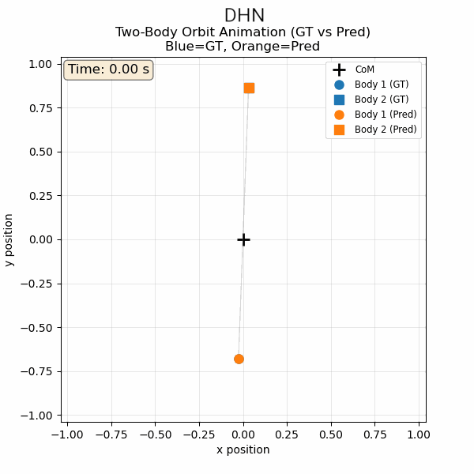
Physics-informed neural networks (PINNs) integrate physical laws into machine-learning models, allowing them to produce accurate and physically consistent solutions to complex forward and inverse problems described by differential equations. These machine learning frameworks aim to capture not only short-term dynamics but also the long-term physical constraints that govern the evolution of these systems. Traditional physically informed neural networks address this objective by embedding Hamiltonian operators, symplectic structures, or other physical priors directly into their architectures. However, most existing formulations capture only local interactions by constraining relationships between adjacent time steps, which prevents them from preserving conservation laws in the long term. Furthermore, they are typically only designed for next-step prediction, making them less suitable for other physical reasoning tasks such as state reconstruction and interpolation for superresolution.
The introduction of the Denoising Hamiltonian Neural Network (DHN) [1] addresses these limitations through three key architectural features:
1. The DHN adopts a transformer architecture and treats the system states as tokens, which allows the system to capture relationships between the non-adjacent states. Better capturing less localized properties of the system, such as the energy encapsulated in the Hamiltonian.
2. The DHN inferences through diffusion, initializing the predicted state as Gaussian noise and denoising it step-by-step to reconstruct it. This feature forces the model to self-correct numerical errors, which could also be modeled as Gaussian. This is specifically important in repeated autoregressive state reconstruction, where errors compound with the number of steps taken in the simulation. This approach enhances the stability of autoregressive prediction and keeps the long-term simulation on the trajectory that preserves conservation laws.
3. In addition to the transformer architecture, the model includes a latent vector that is trained separately for each simulation setting, allowing the network to capture the specific physical parameters associated with the simulation, such as the masses of the objects involved.
This approach has been shown to improve the accuracy in autoregressive, interpolating, and randomized state reconstruction for a single pendulum problem. Here, we extend this framework to a more complex dynamical system: the two-body problem.
[Two-body problem content placeholder]
To generate training data, we implemented a two-body problem simulator based directly on the radial and angular equations of motion derived in the appendix. Each trajectory evolves the state (r, θ, ṙ, θ̇) by integrating
using scipy.solve_ivp. By default, this uses an adaptive Runge–Kutta integrator (Dormand–Prince 4(5)), which provides accurate solutions with automatic step-size control.
For each simulation, we sample the masses as
and choose radii r1 ~ U[0.5, 1.0] and r2 ~ U[1.1, 1.5]. The initial separation is r = r1 + r2 (they are on opposite ends with respect to the CoM), and the angle θ is sampled uniformly from [0, 2π). We set the initial radial velocity to zero, giving the bodies' motion perpendicular to the CoM.
The angular velocity that would give each of them a circular orbit at t=0 is:
and we scale it by a factor of 0.7. This produces a variety of bound elliptical trajectories.
During simulation, we record q = (r, θ), q̇ = (ṙ, θ̇), the Lagrangian L(q, q̇), and its gradients.
This procedure yields a diverse dataset of gravitational orbits with broad variation in mass ratios, initial orientations, radii, and eccentricities.
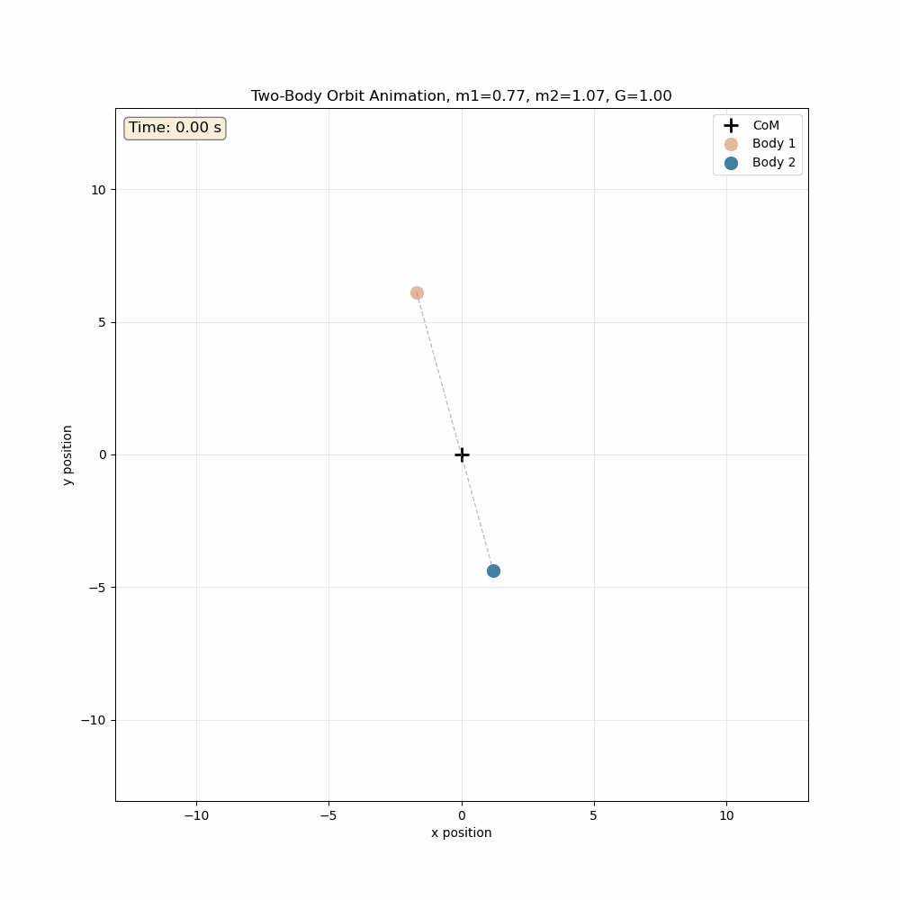
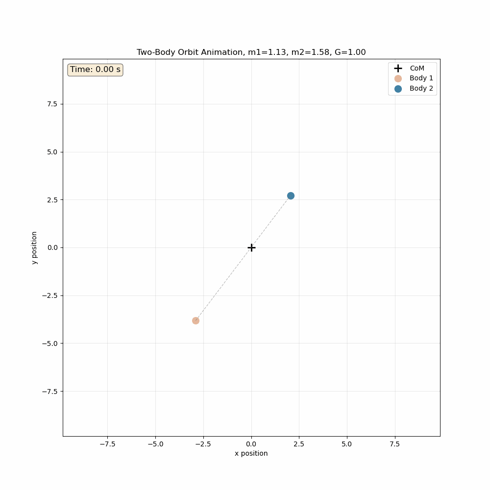
Figure — Two-Body Simulations: example trajectories generated by the simulator, showing diverse orbital dynamics with varying mass ratios, initial orientations, and eccentricities.
We compare the performance of the Denoising Hamiltonian Network (DHN) model against a few baselines, following [cite paper].
The first baseline is a traditional Hamiltonian neural network. This baseline uses a single network that predicts the Hamiltonian H_θ and calculates the next step from the current state using the gradients of the Hamiltonian. This baseline has only one loss term, based on the error in the predicted position and momentum (as opposed to the DHN, which has that term plus a denoising term).
Two integration schemes are used: forward Euler, which performs the update in one step using gradients evaluated at the current state (first-order method), and leapfrog, which performs the update in three half-steps. The leapfrog method first does a half-step update on momentum, then recalculates the gradients of the Hamiltonian at the intermediate state, updates position by a half-step, and then does a second half-step update on momentum. It is thus a second-order symplectic scheme.
We also compare against a transformer and a ResNet that consists of a fully connected network with residual connections [2]. Both the transformer and the ResNet are trained to directly predict the position and momentum at the next time step based on the current timestep and the trajectory embedding from the codebook (the transformer uses self-attention amongst these). The trajectory embedding z is shared across all timesteps within a trajectory, allowing the models to condition on trajectory-specific properties. For the ResNet, we try 1 or 2 residual blocks to assess the effect of network depth.
For the DHN, we evaluate three different kernel sizes (2, 4, and 8), setting the stride to half the kernel size in each case.
We DHN's performance on trajectory completion via autoregression by testing on 1,000 trajectories. The model sees the first 8 time steps, and they are used to optimize the per-trajectory global latent codes (but the weights of the model remain frozen). Then, the model tries to predict the following 120 time steps.
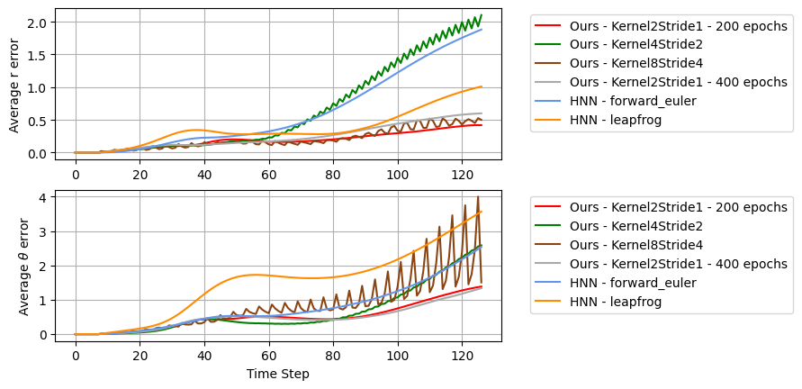
Figure — Autoregressive Trajectory Completion: comparison between the DHN method and an HNN baseline. Showing the average error on the predicted relative distance and angle as a function of time step. All models are trained for 200 epochs unless otherwise noted.
We see that the DHN method outperforms the traditional HNN method for the two body problem. We find a kernel size of 2 and a stride of 1 to be the most optimal. Surprisingly, this simplest approach yields the best results. Since kernel size 2 and stride 1 seems to be the most promising, we try training for longer, for a total of 400 epochs. We look at the training loss curves to investigate this issue. Extending training to 400 epochs does not seem to further improve performance. The training loss remains approximately constant after epoch 200 and exhibits a transient spike near epoch 300, after which training recovers. However, neither the distance nor angle error improves with longer training, suggesting diminishing returns beyond 200 epochs for this configuration.
We do not report a conventional validation loss because it is not informative for our setting.
During training, DHN is optimized using block-wise denoising and motion updates over short temporal windows, whereas at test time the model is evaluated through long-horizon autoregressive rollout after optimizing a per-trajectory latent code. In this regime, short-horizon prediction error is a poor proxy for downstream performance: models with similar training loss can exhibit dramatically different long-term behavior due to error accumulation and energy drift. Consequently, validation loss computed under the training objective does not reliably correlate with the metrics of interest.
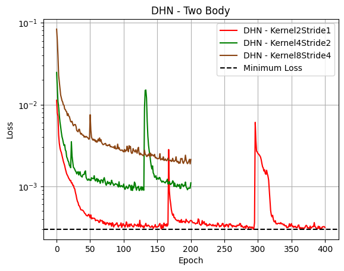
Figure — Training loss curves for the model with different kernel sizes.
We compare the error in distance and angle against the baseline transformer model and the baseline ResNet model. We find that the Transformer performs well at predicting the radial distance r but exhibits large errors in the angular coordinate θ, whereas the ResNet performs well in both.
This differs from the results reported in [cite paper], where DHN outperformed a ResNet baseline. In our case, the ResNet baseline slightly outperforms DHN on this particular metric. But the difference is small for the best DHN configuration (the kernel size 2 and stride 1).
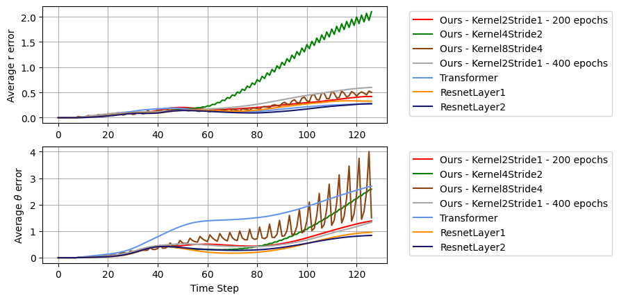
Figure — Autoregressive Trajectory Completion: comparison between the DHN method and Transformer and ResNet baselines. Showing the average error on the predicted relative distance and angle as a function of time step. All models are trained for 200 epochs unless otherwise noted.
Next, we will evaluate the model performance by looking at the energy that corresponds to the predicted position and momentum. We know that for this system, the energy should remain constant because we haven't introduced any source of energy dissipation.
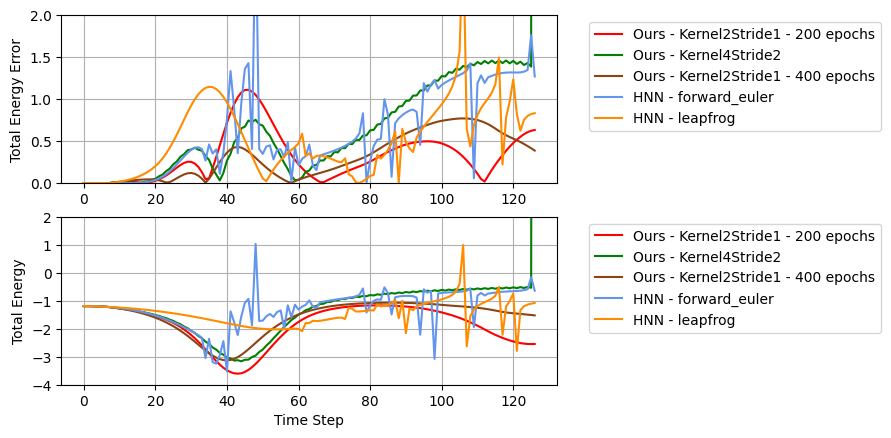
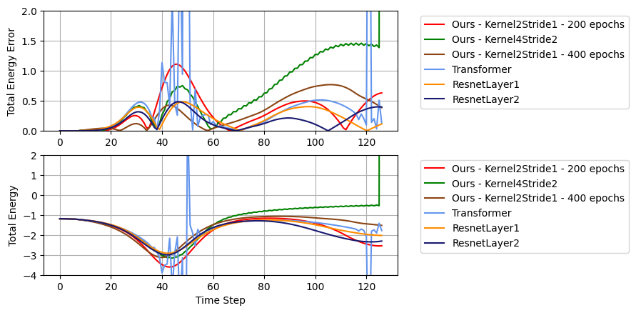
Figure — Predicted Energy. First two rows: comparison between the DHN method and an HNN baseline. Second two rows: Comparison between the DHN method, a Transformer baseline, and a ResNet baseline.
We see that the HNN method and the Transformer struggle significantly, with unstable predictions in the total energy, which we know should remain constant. The DHN configuration with block size 2 and stride 1 performs best among the tested variants. The ResNet baseline produces predictions of similar quality or perhaps slightly better than the DHN method in energy.
Finally, we convert the predicted relative polar coordinates (r, θ) back to Cartesian (x, y) space and visually inspect the reconstructed trajectories. We qualitatively compare trajectory animations produced by DHN, HNN, and ResNet baselines.
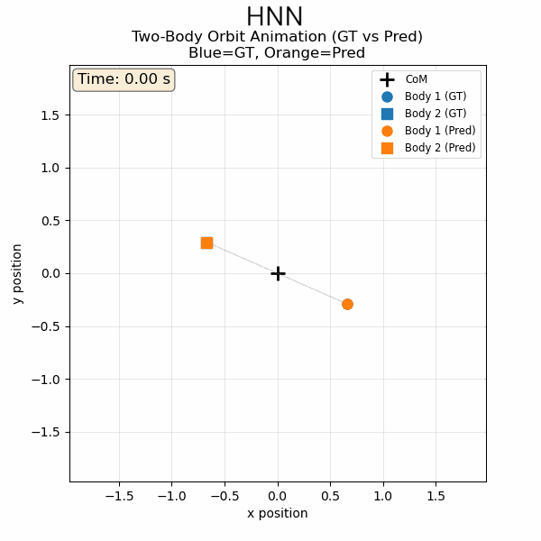
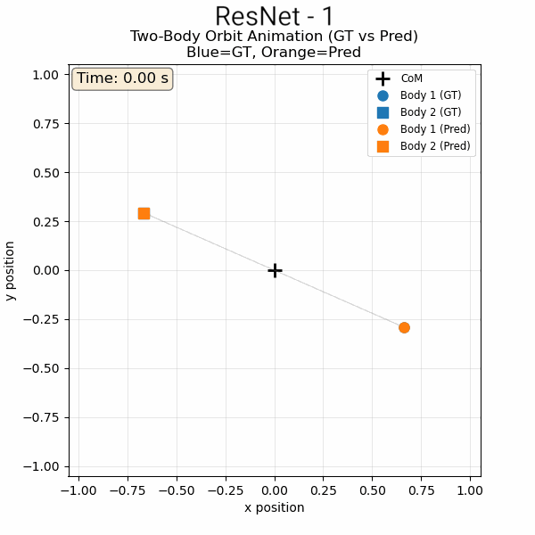
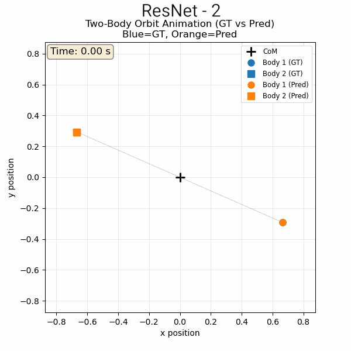
Figure — Reconstructed Trajectories: animations of reconstructed trajectories predicted by different models (DHN, HNN, ResNet Layer 1, and ResNet Layer 2).
From this visual inspection, DHN produces trajectories that appear smooth, stable, and consistent with the expected orbital dynamics, whereas HNN predictions exhibit noticeable drift and distortion over long time scales. Among the ResNet baselines, the two-layer ResNet produces more coherent trajectories than the single-layer variant.
Overall, this qualitative benchmark suggests that DHN produces the most physically consistent long-term trajectories, with the two-layer ResNet performing comparably but visually less stable. While DHN consistently outperforms HNN on this task, its advantage over the ResNet baseline depends on the evaluation metric considered. This highlights the importance of carefully defining evaluation metrics for physics-informed models: quantitative error metrics alone may not fully capture long-term physical plausibility. We discuss more on this challenge and possible directions for improved evaluation in the following section.
So far, our evaluation has focused on forward prediction and long‑horizon energy behavior given dense trajectories. As a complementary test of physical reasoning, we also follow the original DHN work and evaluate the model on a 4× trajectory super‑resolution task, extended here to the two‑body system alongside the single and double pendulum benchmarks.
In this setting, each physical system is simulated as a long time series, but only every fourth time step is observed. The model must reconstruct the missing intermediate states, effectively interpolating a dense trajectory from sparse samples. We implement this using the DHN's multi‑stage super‑resolution pipeline: three denoising stages, each operating on overlapping blocks of size (b = 2) with stride (s = 1), yielding an overall 4× increase in temporal resolution. As in our other experiments, a single latent code (z) is optimized per trajectory and shared across all stages.
To probe generalization, we evaluate two regimes:
Same‑init (in‑distribution). The model is trained and evaluated on the first half of each trajectory. This closely matches the training distribution and mainly tests how well each model can interpolate between familiar states.
Diff‑init (out‑of‑distribution). Using the same trained weights and the same number of test‑time optimization steps for (z), we evaluate on the second half of each trajectory, which starts from states not seen during training. This constitutes a mild distribution shift in the initial conditions while keeping the underlying physics fixed.
We compare DHN against a 1D CNN super‑resolution baseline that upsamples the sparse inputs via interpolation and convolution, but has no Hamiltonian structure and no latent code optimization. In both cases, we report the mean‑squared error (MSE) on the reconstructed generalized coordinates (q), averaged over test trajectories.
The figure below shows the resulting MSE values for all three systems. In the same‑init regime, CNNs perform extremely well on the pendulum systems:
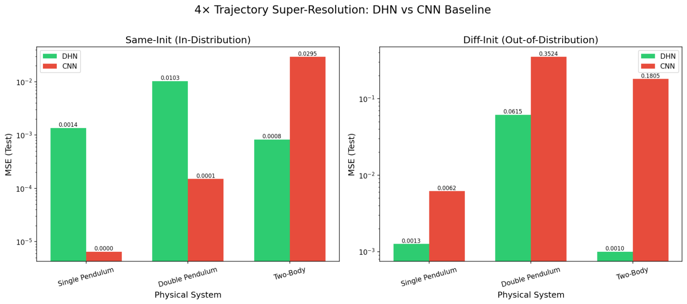
Figure — Super-resolution Performance: Mean-squared error (MSE) comparison between DHN and CNN baseline for single pendulum, double pendulum, and two-body systems, evaluated in both same-init (in-distribution) and diff-init (out-of-distribution) regimes.
In this case, the CNN nearly perfectly interpolates between observed points and slightly outperforms DHN on raw error, which is unsurprising given the low dimensionality and smoothness of these trajectories. However, for the two‑body system, DHN achieves a lower error, with an MSE of (8.24×10-4) versus (2.95×10-2) for the CNN, a reduction of almost two orders of magnitude.
The differences become more pronounced in favor of the DHN method in the diff‑init (OOD) regime:
On all three systems, DHN clearly outperforms the CNN baseline, with particularly large margins on the double pendulum and two‑body problems. For the gravitational two‑body system, DHN's OOD error is almost 200× smaller than the CNN's. Notably, DHN's error barely increases when moving from same‑init to diff‑init on two‑body (from (8.24×10-4) to (9.99×10-4)), whereas the CNN's error jumps by a factor of six.
These results reinforce a theme that also appears in our forward‑prediction experiments:
1. In simple, in‑distribution settings, standard neural network baselines such as CNNs and ResNets can be highly competitive on short‑horizon MSE.
2. Under even modest distribution shifts and more structured dynamics, DHN's Hamiltonian prior, denoising mechanism, and per‑trajectory latent codes yield substantially better robustness. The model does not merely interpolate smooth curves between observed points; it reconstructs trajectories that remain consistent with the underlying conservation laws even when evaluated on new segments of the orbit.
From a modeling perspective, super‑resolution thus provides a complementary validation of DHN on the two‑body problem: it shows that the network has learned not only to propagate states forward, but also to infer physically plausible missing states from sparse observations, and to do so in a way that generalizes beyond the specific temporal window used for training.
[Conclusion content placeholder]
We now study the two-body gravitational problem in the same manner as the single- and double-pendulum systems analyzed in [1]. First, let us show that it is possible to rewrite the system in terms of center-of-mass (CoM) and relative coordinates, thereby separating the overall motion of the system from the dynamics of the interaction. We then transform the relative coordinate into polar form, define appropriate generalized coordinates and momenta, and derive the final equations of motion.
We start by considering two point masses m₁ and m₂ with position vectors r₁ and r₂ and mutual potential V(r) where r = ||r₁ - r₂||. The Lagrangian is
We can define the center-of-mass (CoM) coordinate as
and the relative coordinate
Inverting these relations:
Taking time derivatives:
Substituting into L, one obtains
where μ is the reduced mass
In the CoM frame,
so the Lagrangian reduces to
For gravitational interactions,
Let the relative coordinate be expressed in planar polar form
where r is the radial separation and θ is the polar angle. The kinetic energy becomes
so the Lagrangian takes the form
Thus, our generalized coordinates for the reduced two-body problem are
From the Lagrangian
L = (μ/2)(ṙ² + r²θ̇²) - V(r),
the generalized momenta conjugate to r and θ are
The angular momentum pθ is conserved because θ does not appear explicitly in L:
Thus,
where ℓ is the total angular momentum of the reduced system.
Thus the angular velocity satisfies
Let us evaluate the derivatives of the Lagrangian with respect to the generalized coordinates.
Now, we can evaluate the Euler-Lagrange equations to get the equations of motion of the system.
Angular equation.
Thus the angular equation of motion is:
Radial equation.
Thus the radial equation of motion is
So
where we've used the definition of reduced mass to simplify the final equation.